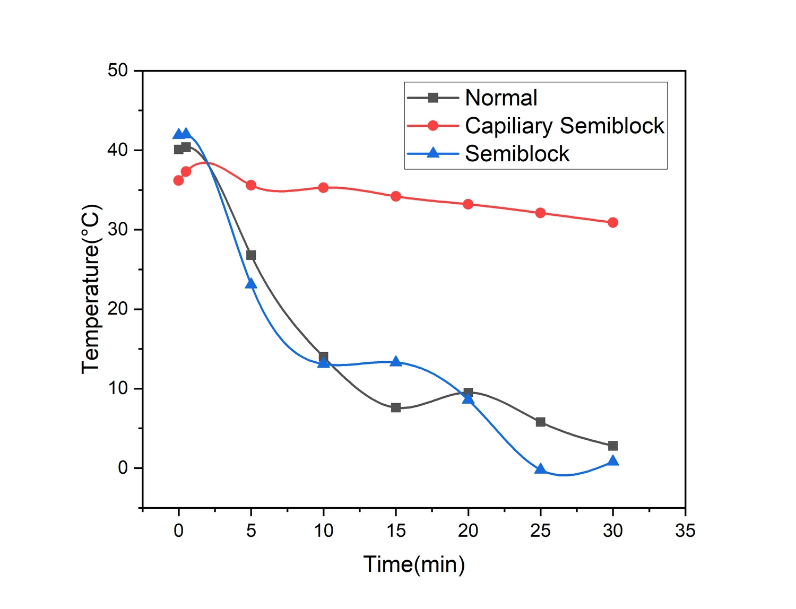

⌁
Refrigerant-line diagnostics
Three line temperatures combined with electrical profiles in a controlled test window.
THERMAL SYSTEMS · REFRIGERATION · EXPERIMENTAL DIAGNOSTICS
I investigate how refrigerant-line temperatures, compressor electrical signals, infrared images and evacuation-process measurements can reveal cooling-system faults and improve industrial reliability.

Only this research track
These themes are selected specifically for this specialization.
Three line temperatures combined with electrical profiles in a controlled test window.
Non-destructive thermal patterns to support industrial quality decisions.
Booster-pump analysis, vacuum monitoring, double-hose comparisons and choking-related prevention.
Evidence-led methods
Instrument pipe temperatures and compressor electrical channels
Collect baseline and injected-fault runs with a defined protocol
Use prediction intervals and verify across models
Connect evacuation-pressure traces with subsequent quality outcomes
Selected work
Only the projects that materially support this track are featured.

Preliminary researchMeasured compressor discharge, filter-drier and suction line temperatures alongside power, current and voltage in a small controlled study.
My involvement: Experimental design and signal analysis
Evidence: Preliminary single-model study: 18/19 faulty runs flagged; 0/9 normal runs falsely flagged.
Manuscript in preparation
Investigated thermal imaging as a rapid, non-destructive means of characterizing refrigerator cooling behavior.
My involvement: Thermal-imaging workflow and quality-control analysis
Evidence: Manuscript in preparation.
 Industrial improvement
Industrial improvement
Participated in implementing booster pumping analysis, vacuum-pressure compressor evaluation, double-hose vacuuming, vacuum-pump upgrades and Pirani/CAN-HS monitoring.
My involvement: Implementation and industrial analysis
Evidence: Reported choking-related rate declined 0.13% (2021) to 0.02% (2025) amid multiple process changes; attribution to a single intervention is not established.
Future research
Can short-duration thermal and electrical profiles distinguish undercharge, overcharge and flow restriction across multiple refrigerator models?
What vacuum signatures reveal incomplete evacuation, system leakage or retained non-condensables?
I welcome discussions with research groups whose work connects to Thermal Engineering & Refrigeration.
Academic profile and contact ↗